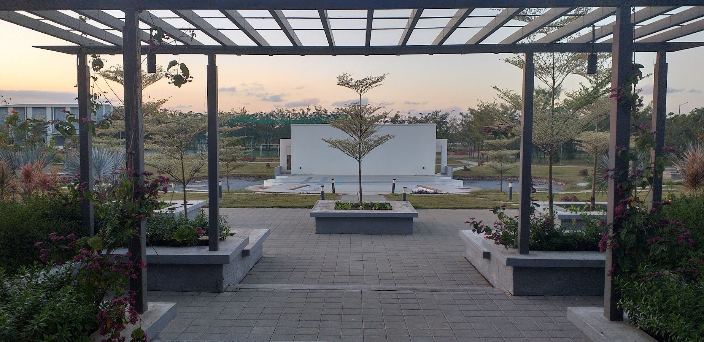
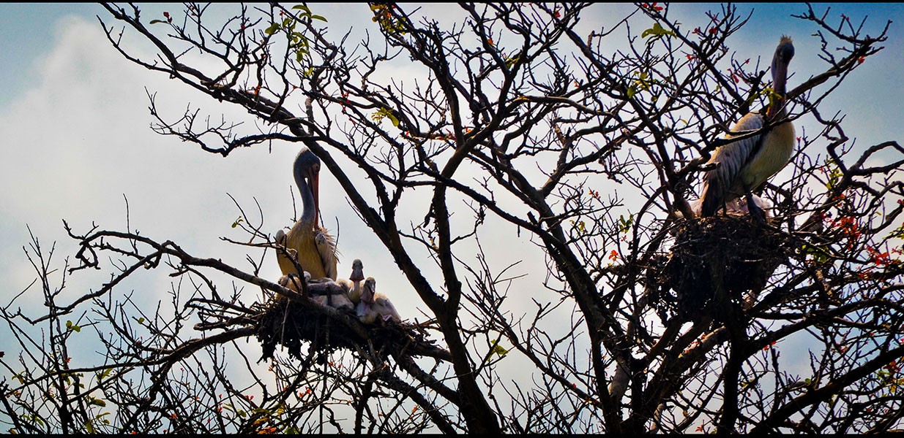
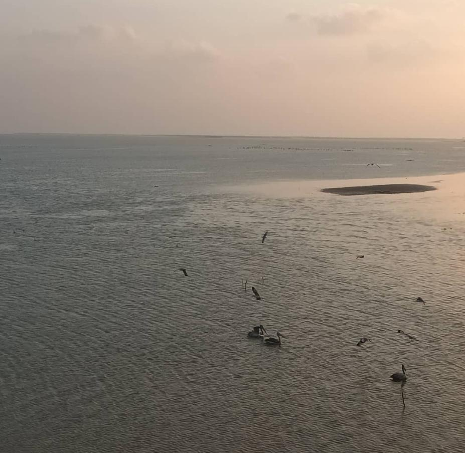
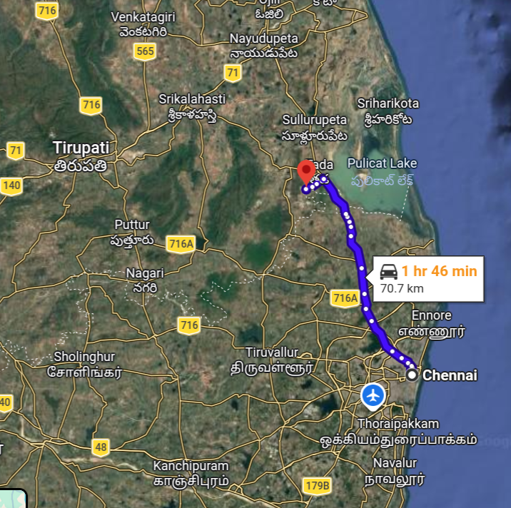

The event will be hosted at Krea University, situated within the Sri City Special Economic Zone. Address: 5655, Central Expressway, Sri City, Andhra Pradesh 517646, India.

Krea University Campus

Nelapattu Bird Sanctuary

Pulicat Lake
Travel

Location of Krea University (location indicated by the red map marker)
The conference will be held at Krea University, located in Sri City, Andhra Pradesh, approximately 60 km north of Chennai along National Highway 16. Chennai is the primary arrival hub for international and domestic participants.
For participants arriving in or via Chennai, the organizers will attempt to facilitate transportation to Krea University. The following options are being planned:
Shared Taxi Arrangements: We will coordinate taxis that may be shared by participants arriving at similar times in order to reduce costs and improve convenience.
Shuttle from Chennai (Alwarpet): We will attempt to arrange a pick-up shuttle service from the Krea University Administrative Office in Alwarpet (central Chennai). Participants may use this location to drop luggage and briefly rest before onward travel to campus.
Please note that both arrangements are tentative at this stage. Detailed schedules, sign-up procedures, and confirmation will be communicated closer to the conference dates.
Chennai International Airport (MAA) — Recommended Distance to Campus: ~65 km | Travel Time: 1.5–2 hours (traffic dependent)
Taxi (Fastest): App-based services (Uber, Ola) and prepaid taxis are available. Estimated fare: ₹1800–₹3000.
Via Metro + Suburban Train (Economical Route): Take Chennai Metro from Airport to Wimco Nagar Metro station (northern terminus of the Blue Line). From Wimco Nagar, take a suburban EMU train toward Tada/Sullurupeta/Nellore. Get down at Tada. Travel time from Wimco Nagar to Tada is around 1 hr 15 minutes. Timings are available on this website. Tada railway station is around 7 kms away from the university. Autos and university pickup services are available at Tada station. Further details on university pick up services will be made available closer to the date.
Tirupati Airport (TIR) Distance to Campus: ~82 km | Travel Time: 1.5–2 hours (traffic dependent)
Taxi : Prepaid taxis are available. Estimated fare: ₹1800–₹3000.
Option 1: Via Sullurupeta (Closest Station)
Trains running both from major cities including Kolkata, New Delhi, Hyderabad, Vijayawada towards Chennai as well as trains originating from Chennai (Central towards Vijayawada, Hyderabad) stop at Sullurupeta. The journey from Chennai to Sullurupeta by train typically takes about 1 to 1.5 hours over the ~86 km rail distance on this section.
From Sullurupeta to campus: Taxi/auto takes 20–25 minutes (₹300–₹600). This is the most straightforward rail option.
Option 2: Via Chennai (Economical & Convenient for Chennai Central)
Taxi (Recommended): App-based services (Uber, Ola) and prepaid taxis are available. Estimated fare: ₹1800–₹3000.
Via Metro + Suburban Train (Recommended Low-Cost Route): Take Chennai Metro to Wimco Nagar Metro station (northern terminus of the Blue Line). From Wimco Nagar, take a suburban EMU train toward Tada/Sullurupeta/Nellore. Get down at Tada.
Autos and university shuttle services are available at Tada station. Further details on university shuttle services will be made available closer to the date.
Total Travel Time: ~2–2.5 hours
Approximate Cost: ₹100–₹300 (train) + ₹300–₹600 (local taxi). This is a budget-friendly and reasonably efficient option.
From Chennai (Madhavaram)
Take an Andhra Pradesh–bound bus toward Nellore/Vijayawada from the Madhavaram Bus Terminus. Drop-off at Tada or Sri City (if the service stops there). Travel time is 1-2 hours depending on traffic. Estimated fare is ₹150–₹400.
From Tada bus stop: Taxi/auto to campus takes 15–20 minutes.
Note: Buses don't enter Sri City township; confirm with the conductor before boarding.
Sri City is a planned township with controlled entry. Visitors may be required to present identification at the main gate.
The Krea campus is approximately 10–15 minutes inside the township.
Participants are encouraged to share arrival details with conference organizers in advance, particularly for late-night arrivals.
Accommodation
Primary accommodation for participants will be arranged on the Krea University campus. Single occupancy AC hostel rooms with attached bathrooms will be provided to the participants.
For participants preferring off-campus accommodation, several business hotels and guesthouses are available within Sri City and the nearby town of Tada. Further details, including corporate rates and booking information, will be shared directly with registered participants via email.
Indicative options include:
Mango Resorts –
A well-appointed resort inside Sri City offering comfortable accommodation in a landscaped setting, along with a range of standard hospitality amenities.
Hotel True North –
A business guest house inside Sri City providing functional accommodation and essential facilities suitable for short and extended stays.
Hotel Ilara –
A contemporary hotel and spa offering well-equipped rooms, dining services, and wellness facilities in Tada at the entrance of Sri City.
Eating
Daily meals and refreshments for attendees will be provided at the Krea University campus dining facilities.
If you wish to explore outside the campus, Sri City features various eateries, cafes, and multi-cuisine restaurants catering to the business district. You can also take a short trip into Tada for a wider variety of fare. Sri City also boasts some of the best Japanese restaurants in Southern India:
Ubbalamadugu Falls (Tada Falls) – (~30 km): A scenic waterfall in the Eastern Ghats, popular for short treks and nature walks.
Pulicat Lake – (~30–35 km): India’s second-largest brackish water lagoon, known for migratory flamingos and seasonal birdwatching.
Nellapattu Bird Sanctuary – (~40 km): A major breeding ground for pelicans and other migratory birds.
Sri Kalahasti – (~50 km): A town with South Indian temple architecture with substantial contributions from the Chola and Vijayanagara periods. Sri Kalahasti is also renowned as a traditional centre of Kalamkari textile art, known for its intricate hand-drawn and block-printed designs.
Tirupati – (~70 km): A historic hill complex with layers of architectural development and inscriptional history spanning several centuries.
Chandragiri Fort – (near Tirupati): A 16th-century Vijayanagara-era fort featuring palace structures and panoramic views of the surrounding hills.
Satish Dhawan Space Centre, Sriharikota – (~35 km): India’s primary spaceport, operated by ISRO (public access subject to prior permission).
Venadu Dargah – (near Sriharikota): A historic Sufi shrine on an island in Pulicat lake.
Chennai – (~60 km): A major metropolitan centre offering beaches, museums, historic architecture, and a vibrant cultural scene.